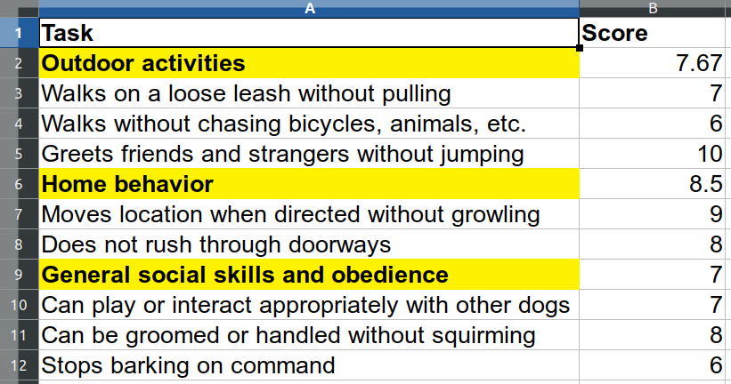

When we work with other people’s data, we often have to struggle through multiple unexpected steps before we get to a flexible, usable structure. Popular ways of structuring and presenting data can place content beyond the reach of code-based routines to tackle repetitive tasks efficiently.
The functions in unheadr help us rework data shared by other people, from a human-readable structure to a tidier machine-readable structure on which we can perform common data manipulation tasks.
Here is how unheadr works with tibble and data frame objects that suffer from common issues such as:
Embedded subheaders are usually grouping variables embedded into another variable, used to show hierarchical data or create small multiples of data.
A simple example would be a coffee shop menu:
dat <- data.frame(
drink = c(
"Cold Drinks", "Soda", "Water", "Juice", "Lemonade",
"Hot Drinks", "Tea", "Coffee"
),
price = c(NA, 2.99, 1.99, 3.15, 2, NA, 3.99, 1.99), stringsAsFactors = FALSE
)
dat
#> drink price
#> 1 Cold Drinks NA
#> 2 Soda 2.99
#> 3 Water 1.99
#> 4 Juice 3.15
#> 5 Lemonade 2.00
#> 6 Hot Drinks NA
#> 7 Tea 3.99
#> 8 Coffee 1.99The beverage type is embedded in the ‘drinks’ variable. If we can match them with regular expressions, we can move the grouping values into their own variable using untangle2()
untangle2(dat, "Drinks$", drink, "beverage_type")
#> 2 matches
#> drink price beverage_type
#> 1 Soda 2.99 Cold Drinks
#> 2 Water 1.99 Cold Drinks
#> 3 Juice 3.15 Cold Drinks
#> 4 Lemonade 2.00 Cold Drinks
#> 5 Tea 3.99 Hot Drinks
#> 6 Coffee 1.99 Hot DrinksBroken values usually happen when we’re pressed for space.
For whatever reason, the entries for the Barcelona 1992 and London 2012 Olympics are broken across two contiguous rows and NAs are used as padding in the other variables.
OGames <- tibble(
Games = c("Los Angeles 1984", "Barcelona", "1992", "Atlanta 1996", "Sydney 2000", "London", "2012"),
Country = c("USA", "Spain", NA, "USA", "Australia", "UK", NA),
Soccer_gold_medal = c("France", "Spain", NA, "Nigeria", "Cameroon", "Mexico", NA)
)
OGames
#> # A tibble: 7 x 3
#> Games Country Soccer_gold_medal
#> <chr> <chr> <chr>
#> 1 Los Angeles 1984 USA France
#> 2 Barcelona Spain Spain
#> 3 1992 <NA> <NA>
#> 4 Atlanta 1996 USA Nigeria
#> 5 Sydney 2000 Australia Cameroon
#> 6 London UK Mexico
#> 7 2012 <NA> <NA>In this case, we can use unbreak_vals() to ‘unbreak’ the lines in the ‘Games’ variable, matching the strings that start with numbers.
OGames %>%
unbreak_vals("^[0-9]", Games, Games_unbroken, .slice_groups = TRUE) %>%
select(Games_unbroken, everything())
#> # A tibble: 5 x 3
#> Games_unbroken Country Soccer_gold_medal
#> <chr> <chr> <chr>
#> 1 Los Angeles 1984 USA France
#> 2 Barcelona 1992 Spain Spain
#> 3 Atlanta 1996 USA Nigeria
#> 4 Sydney 2000 Australia Cameroon
#> 5 London 2012 UK MexicoWrapped columns often happen when we merge cells in spreadsheets or use table formatting in a word processor, resulting in empty or NA values used to pad all the vertical space.
knicks <- data.frame(
stringsAsFactors = FALSE,
player = c("Allan Houston", NA, "Latrell Sprewell", NA, NA),
teams = c(
"Pistons", "Knicks", "Warriors", "Knicks",
"Timberwolves"
),
position = c("Shooting guard", NA, "Small forward", NA, NA)
)
knicks
#> player teams position
#> 1 Allan Houston Pistons Shooting guard
#> 2 <NA> Knicks <NA>
#> 3 Latrell Sprewell Warriors Small forward
#> 4 <NA> Knicks <NA>
#> 5 <NA> Timberwolves <NA>We can unwrap the ‘teams’ values into a single string using unrwap_cols().
knicks %>% unwrap_cols(groupingVar = player, separator = ", ")
#> # A tibble: 2 x 3
#> player teams position
#> <chr> <chr> <chr>
#> 1 Allan Houston Pistons, Knicks Shooting guard
#> 2 Latrell Sprewell Warriors, Knicks, Timberwolves Small forwardThis is more or less the opposite to separate_rows() from tidyr.
Broken rows have values of two contiguous rows broken up and padded with empty or NA values.
basketball <-
data.frame(
stringsAsFactors = FALSE,
v1 = c(
"Player", NA, "Sleve McDichael", "Dean Wesrey",
"Karl Dandleton", "Mike Sernandez",
"Glenallen Mixon", "Rey McSriff"
),
v2 = c(
"Most points", "in a game", "55", "43", "41", "111", "109", "104"
),
v3 = c(
"Season", "(year ending)", "2001", "2000", "2002",
"2000", "2002", "2001"
)
)
basketball
#> v1 v2 v3
#> 1 Player Most points Season
#> 2 <NA> in a game (year ending)
#> 3 Sleve McDichael 55 2001
#> 4 Dean Wesrey 43 2000
#> 5 Karl Dandleton 41 2002
#> 6 Mike Sernandez 111 2000
#> 7 Glenallen Mixon 109 2002
#> 8 Rey McSriff 104 2001In this case, we can match any value in any variable along the row that has broken values.
unheadr also includes a function for flattening font and cell formatting in spreadsheet files into character strings in the corresponding cell.
The example file bundled with the unheadr looks like this:

Font formatting and cell highlighting is being used to label an embedded grouping variable (meaningful formatting). The annotate_mf() function flattens the formatting into a character string describing the formatting. The HTML code of the colors used for cell highlighting is also included.
example_spreadsheet <- system.file("extdata/dog_test.xlsx", package = "unheadr")
annotate_mf(example_spreadsheet, orig = Task, new = Task_annotated)
#> # A tibble: 11 x 3
#> Task Task_annotated Score
#> <chr> <chr> <dbl>
#> 1 Outdoor activities (bolded, highlighted-FFFFF200) Outdoor a… 7.67
#> 2 Walks on a loose leash witho… Walks on a loose leash without pulling 7
#> 3 Walks without chasing bicycl… Walks without chasing bicycles, animals,… 6
#> 4 Greets friends and strangers… Greets friends and strangers without jum… 10
#> 5 Home behavior (bolded, highlighted-FFFFF200) Home beha… 8.5
#> 6 Moves location when directed… Moves location when directed without gro… 9
#> 7 Does not rush through doorwa… Does not rush through doorways 8
#> 8 General social skills and ob… (bolded, highlighted-FFFFF200) General s… 7
#> 9 Can play or interact appropr… Can play or interact appropriately with … 7
#> 10 Can be groomed or handled wi… Can be groomed or handled without squirm… 8
#> 11 Stops barking on command Stops barking on command 6The underlying reasoning, background, and possible uses of unheadr are now described in this publication:
Verde Arregoitia, L. D., Cooper, N., D’Elía, G. (2018). Good practices for sharing analysis-ready data in mammalogy and biodiversity research. Hystrix, the Italian Journal of Mammalogy, 29(2), 155-161. Open Access, 10.4404/hystrix-00133-2018.